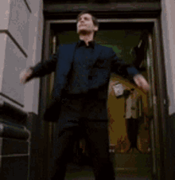
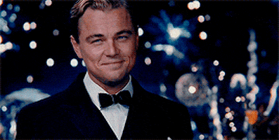
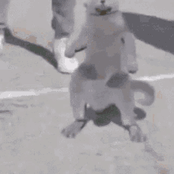
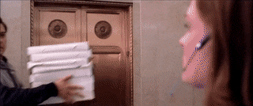

Your browser does not support the audio element.
 


nice job, wow so cool. very pog. sugoi. Author: FJ. This took me approx. 4-5 hours to make with breaks; helped me refresh my css and php. let me know if u had fun and if you'd like another one, i had a lot of fun making it <3. Also giv me feedback on the the difficulty, i'd say this was medium difficulty, the first was ez in my opinion, the second was quite straightforward as well with the morse code, last was a little bit harder with the coordinates, but once you figured out it was from the simpsons it wasn't very diffic if u put 2 and 2 toget. the goal was for the first problem to tak 10-30min, the second maybe 30-60min, and the last >45min. for this one i spent most the time on the code and not so much on the way the problems were written. the nature of the questions weren't very diverse in this either i think; i had som kool ides for riddles but i thought they'd be 2 much but mybe nxt timee. :3